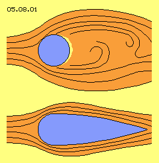
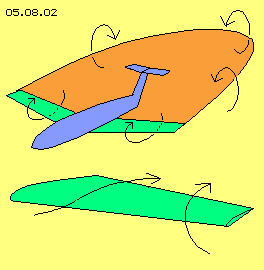
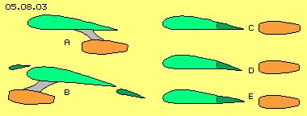
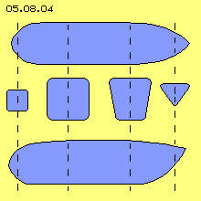
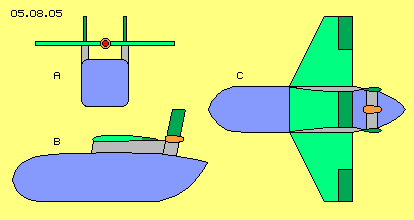
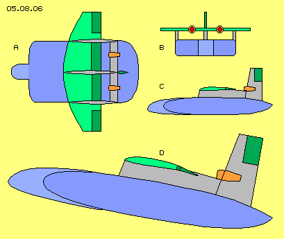
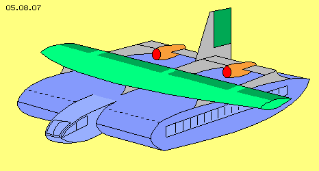
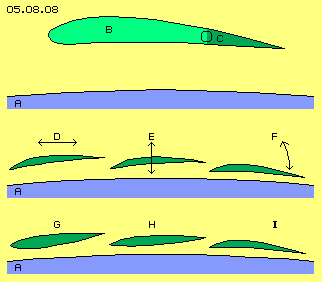
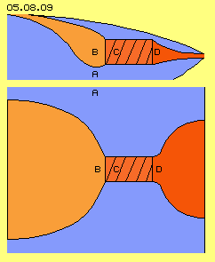
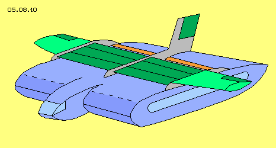

Zielsetzung
Im vorigen Kapitel wurde dargestellt, wie der Staudruck am Bug eines Flugzeuges in Vorschub umzuwandeln ist. Am Beispiel der A380 wurde aufgezeigt, wie die erforderlichen Druck- und Sog-Flächen im Rumpf unterzubringen sind. Bislang war man bemüht, den Luftwiderstand des Rumpfes möglichst gering zu halten, was mit relativ dünnen und langen ´Röhren´ am besten erreicht wird. Basis des Forellen-Vortriebs ist aber der Staudruck am Bug - und dieser ist stärker gegeben bei einem relativ stumpfen Bug. Diese neue Vortriebstechnik wird also auch zu einem neuen Design der Flugzeuge führen.
Ein zweiter problematischer Aspekt ist unterschiedliche Bedarf an Auftrieb. Beim Start bringen die Tragflächen zu wenig Auftrieb, so dass die Maschine im Steigflug mit viel Energie-Einsatz hinauf zu drücken ist. Andererseits ist beim Horizontalflug mit Reisegeschwindigkeit eher zu viel Auftrieb gegeben. Eine generelle Lösung dieses Problems erfordert grundlegend neue Konzeptionen.
Zum Dritten ist das Fliegen eine ungeheure Umweltbelastung: in großer Höhe stellen die Verbrennungsrückstände eine Verschmutzung empfindlicher Luftschichten dar. Besonders im Bereich der Flughäfen sind die Abgase und Rußpartikel eine enorme Belastung. Und vollkommen unerträglich ist die Lärmbelästigung im weiten Umfeld. Für diese Problembereiche werden in diesem Kapitel nun Lösungen diskutiert.
Wirbelstrasse

Flugzeuge zu bauen gilt als eine der großen Leistungen heutiger Technik, die über viele Jahre mit großem Aufwand auf hohen Stand gebracht wurde. Die Erfolge waren so groß, dass nun jedermann jederzeit an jeden Ort fliegen kann. Im Ergebnis aber stellt der heutige Flugverkehr nichts weniger als gigantische Verschwendung von Resourcen und ebensolche Umweltverschmutzung dar. Könnte es sein, dass grundlegend anders zu verfahren, eine neue Technologie notwendig - und möglich ist? Vorweg dazu ein paar einfache Sachverhalte:
In Bild 05.08.01 oben ist ein runder Querschnitt (blau) z.B. eines dünnen Drahts dargestellt, der ruhend in einer Strömung (rot) ist bzw. durch ruhende Luft nach links bewegt wird. Hinter dem Draht ergibt sich die bekannte Wirbelstrasse, d.h. Turbulenz und damit sehr hoher Widerstand. Der auftretende Widerstand hat aber überhaupt nichts mit diesen Wirbeln achteraus zu tun - wie fälschlicherweise immer wieder unterstellt wird.
Ausschlaggebend für den Widerstand ist allein der Druck unmittelbar an der Oberfläche dieses Köpers: ganz vorn ist Staudruck gegeben, weiter zur Seite hin relativ geringer statischer Druck (aufgrund der dortigen schnellen Strömung), aber zur Hinterseite kann die Luft nicht schnell genug hin fließen (sofern die Geschwindigkeit nicht sehr gering ist), so dass sich dort relative Leere ergibt (gelber Bereich). Nur die Druckdifferenzen unmittelbar an der Oberfläche des Körpers ergeben den Widerstand - hier praktisch ´negativen Vortrieb´ - während die Wirbel nur sekundäre Nebenerscheinung sind.
In diesem Bild unten ist die bekannte Lösung zur wesentlichen Reduzierung dieses Widerstands schematisch dargestellt. Durch die seitlich nach hinten nur langsam zurück weichenden Wände muss Luft nicht mehr rasch nach innen fließen und es existiert kein Bereich geringer Dichte mehr. Dieser ´strömungsgünstige´ Körper weist nur einen Bruchteil an Widerstand auf. Allerdings ist dieser nicht null, z.B. weil dem Staudruck vorn kein entsprechender Andruck von hinten entgegen steht.
Wirbelschleppe

Die derzeit favorisierte Theorie zum Auftrieb ist noch immer die ´Zirkulations-Theorie´ (so lang nicht abgelöst durch meine im Kapitel 05.05. ´Auftrieb´ dargestellte Theorie). Es wird ´Zirkulation´ von Luft um die Tragfläche unterstellt (unten vorwärts, oben rückwärts) und zudem wird unterstellt, dass diese Wirbel jeweils außen an den Tragflächen nach hinten abbiegen und achteraus einen lang gezogenen, geschlossenen ´Wirbelring´ bilden, wie in Bild 05.08.02 oben schematisch dargestellt, siehe Pfeile.
Aus der ´Mächtigkeit´ dieses Ring-Wirbel-Systems wird zurück geschlossen auf die Stärke des Auftriebs. Das ist analog zur fälschlichen Anschauung, obige Wirbelstrasse wäre ursächlich für den Widerstand. Andererseits hält man Wirbel und Turbulenz schädlich für die Vorwärtsbewegung und versucht z.B. diesen Randwirbel außen am Flügel durch ´Winglets´ zu unterbinden.
Das ist vollkommen witzlos, weil der ´Schaden´ nicht an der Hinterkante der Tragfläche entsteht, sondern viel weiter vorn. In diesem Bild unten ist schematisch eine Tragfläche dargestellt. Aufgrund des Sogbereichs oben-hinten wird Luft beschleunigt (siehe Pfeil links) über die Oberfläche gezogen. Andererseits fließt in diesen Bereich relativer Leere auch Luft von vorn-außen (siehe Pfeil rechts). Dieser Zustrom ist tatsächlich schädlich, weil die relative Leere damit zusätzlich aufgefüllt wird. Wirksame Abhilfe dagegen bietet nur ein ´gepfeilter´ Flügel, weil der seitliche Zufluss von Luft damit ´zu spät kommt´ für weiter zum Rumpf hin befindliche Teile des Flügels.
Wenn die Tragfläche Auftrieb erzeugen soll ist unabdingbar, dass achteraus Turbulenz bzw. diese Wirbelschleppe entsteht. Es macht keinen Sinn, diese nach geordnete Nebenwirkung (siehe oben erwähntes Kapitel) beseitigen zu wollen. Selbstverständlich jedoch sind im übrigen alle Ursachen von Verwirbelung zu beseitigen, die ohne entsprechenden Nutzen sind.
Zu viel Auftrieb

Der Auftrieb wächst (angeblich) im Quadrat zur Geschwindigkeit. Beim Start und damit langsamer Geschwindigkeit ist entsprechend (zu) wenig Auftrieb vorhanden, wenn aber die Reisegeschwindigkeit erreicht ist, gibt es einen Überschuss an Auftrieb. Wie sonst ist zu erklären, dass die Triebwerke auf der falschen Seite der Tragfläche hängen, nämlich meist unterhalb, wie in Bild 05.08.03 bei A schematisch dargestellt ist (grün die Tragfläche, rot das Triebwerk). Eigentlich müsste die Luft oben beschleunigt werden und nicht an der Unterseite, wie gelegentlich sogar mit vorn angeordneten Triebwerken (wie bei B skizziert ist).
Um den notwendigen Auftrieb in der Startphase zu erreichen, wird die wirksame Fläche vergrößert, z.B. indem ´Vor-Flügel´ oder ´achterliche Klappen´ ausgefahren werden, wie ebenfalls bei B schematisch dargestellt ist. Wie die komplexe Mechanik dieser Einrichtung deutlich aufzeigt, können das nur ´Behelfs-Maßnahmen´ sein, die nicht das Kernproblem auf unmittelbare Weise lösen.
Rechts in Bild 05.08.03 ist schematisch dargestellt, wie prinzipiell eine Tragfläche und ein Triebwerk zueinander angeordnet sein müssten: das Triebwerk direkt in gerader Achse hinter dem Flügel (C). Mehr Auftrieb resultiert, wenn die Luft über der Fläche schneller fließt, also müsste eine Klappe (D) am Ende der Tragfläche nach unten schwenken. Das Triebwerk saugt dann Luft nur von der Oberseite ab, während unten zusätzlicher Staudruck entsteht.
Umgekehrt, wenn die Tragfläche eigentlich nur ein neutraler, strömungsgünstiger Körper sein soll, kann diese Klappe (E) etwas nach oben angehoben werden. Um die Tragfläche herrscht dann beidseits schnelle Strömung, so dass Luft an ihrer Nase abgesaugt wird, d.h. verminderter Widerstand gegeben ist.
Auftrieb ergibt sich nur aus Differenz statischer Drücke und diese wiederum korrelieren mit der Geschwindigkeit von Strömung. Triebwerke produzieren schnelle Strömung achteraus, aber sie saugen genauso viel Luft vorn ein. Also ist zweckdienlich, die Funktion beider Bauelemente durch geeignete Anordnung zu koordinieren. Je nach Bedarf an Auftriebskraft muss zudem das Profil variabel sein, allerdings müsste das technisch viel einfacher zu lösen sein als heute üblich.
Staudruck-Motor
Der Widerstand gegen Vorwärtsbewegung ist abhängig von der Form des Körpers, d.h. der Relation von Höhe zur Länge sowie der Kontur seiner Oberflächen. Der Widerstand wächst im Quadrat zur Geschwindigkeit und natürlich wächst der Widerstand mit zunehmender projizierter Fläche, einfach weil mit größerem Querschnitt entsprechend mehr Luft umzulenken ist. Daraus ergeben sich Bauformen, die mehr oder weniger ´strömungsgünstig´ sind, weil natürlich bei jeder Anwendung auch andere Gesichtspunkte zu beachten sind.
Nachfolgend werden nun Rümpfe vorgeschlagen, die nach heutigem Stand völlig untauglich wären, weil sie viel zu viel Angriffsfläche bieten. Diese ´plumpe´ Formen sind jedoch höchst effektiv, wenn der ´Forellen-Motor´ des vorigen Kapitels eingesetzt wird, um aus Staudruck eine Vortriebs-Kraft zu generieren.
Eckiger Kasten

In Bild 05.08.04 ist als Ausgangsbasis ein kastenförmiger Rumpf dargestellt, oben eine Sicht von oben auf den Rumpf, unten eine Seitenansicht, dazwischen Querschnitte jeweils im Bereich der gestrichelten Linien.
Im Prinzip hat dieser Rumpf einen viereckigen Querschnitt, lediglich die Ecken sind etwas gerundet. Nach hinten bleibt die Oberseite möglichst breit, nur die Unterseite wird schmäler, so dass der Rumpf nach hinten-oben V-förmig ausläuft.
Gegenüber heutiger Form von Rümpfen ist dieser fürwahr sehr plump. Wie aber oben angesprochen, ist der damit verbundene hohe Widerstand zunächst außer Acht zu lassen. Dafür ergibt sich der Vorteil, dass der ´rechteckige´ Innenraum dieses Rumpfes natürlich sehr viel besser nutzbar ist als enge und lange ´Röhren´ konventioneller Flugzeuge.
Aufgesetzte Tragfläche
In Bild 05.08.05 ist nun schematisch die Anordnung der anderen Bauelemente des Flugzeugs skizziert, bei A als Schnitt quer durch die Längsachse, bei B als senkrechter Schnitt entlang der Längsachse und bei C eine Sicht von oben auf dieses Flugzeug. Wesentliche Merkmale dieser neuen Technologie sind, dass die Tragfläche oberhalb des Rumpfes und das Triebwerk hinter der Tragfläche angeordnet sind (hier beispielsweise einer ein-motorigen Maschine).
Voriger kastenförmige Rumpf (blau) ist hier noch einmal skizziert. An seinen oberen Kanten sind ´Pfosten´ installiert, lang gestreckt und strömungsgünstig geformt, welche ´Längs-Säulen´ (grau) genannt werden. Quer auf diesen Längssäulen ist die durchgehende Tragfläche (grün) montiert. Ein mittiger Teil befindet sich also über der relativ breiten und flachen Rumpfoberseite, links und rechts ragen seitliche Teile nur relativ kurz hinaus. Die Vorderkanten der äußeren Flügelteile sind gepfeilt zur Vermeidung schädlichen Zustroms (wie oben diskutiert). Hinten-außen an diesen Tragflächen sind normale Höhenruder (dunkelgrün) installiert.

Die beiden Längssäulen reichen weiter nach hinten (über das Ende der Tragfläche hinaus) und bilden dort nach oben jeweils ein Seiten-Leitwerk (dunkelgrün). Quer zu den Längssäulen verlaufen Streben, welche das Triebwerk (rot) tragen. Der Einlass dieses Triebwerks befindet sich auf Höhe der Tragfläche. Durch eine Klappe (dunkelgrün) hinten an der Tragfläche wird reguliert, in welchem Umfang Luft über oder unter der Tragfläche angesaugt wird.
Aus der Seitenansicht (B) wird hier schon deutlich, dass nicht nur Auftrieb an der Oberseite der Tragfläche produziert wird. Tragfläche und Rumpf bilden praktisch eine Düse, so dass auch auf der Rumpf-Oberfläche schnelle Strömung anliegt. Durch die seitliche Begrenzung der Längssäulen kann keine Luft zufließen, so dass die Sogwirkung aus diesem geschlossenen Kanal weit nach vorn auf die Rumpf-Oberseite reichen wird. Der Rumpf selbst trägt damit zum Auftrieb ganz wesentlich bei, so dass die seitlichen Flügel viel weniger Spannweite aufweisen müssen als konventionell üblich.
Breiter Rumpf
´Länge läuft´ ist eine Grundregel der Strömungslehre: wenn an der Frontseite erst einmal das Fluid zur Seite geschoben wurde, kann dahinter ein Körper beliebiger Länge ohne zusätzlichen Aufwand folgen, egal ob bei Zügen, bei Booten und Schiffen oder auch bei Flugzeug-Rümpfen. ´Breite zieht´ dagegen ist eine Grundregel der neuen Technologie und Breite trägt bei dieser Konzeption auch wesentlich zum Auftrieb bei. Analog zum vorigen Bild ist darum in Bild 05.08.06 eine zweimotorige Maschinen mit sehr viel breiterem Rumpf skizziert, bei A die Sicht von oben, bei B ein Querschnitt und bei C ein Längsschnitt.
Aus der Sicht von oben (A) stellt sich der Rumpf (dunkelblau) nun als fast rechteckige Fläche dar. Die Hinterkante ist etwas gerundet, während die Vorderkante quer zur Längsachse verläuft und nur ganz außen etwas gerundet ist. Aus dem Cockpit sollte Sicht auch zur Seite hin möglich sein, darum ist diese mittige ´Nase´ (hellblau) nach vorn gezogen.

Im Querschnitt (B) bildet der Rumpf (dunkelblau) inklusive mittiger Cockpit-Nase (hellblau) nun ein flaches Rechteck, nur die Ecken sind etwas gerundet. Auf den Kanten oben-außen sind wiederum zwei Längssäulen (grau) installiert, zusätzlich nun auch mittig eine Längssäule (grau). Nur diese mittige Längssäule geht hinten in ein Seitenleitwerk (dunkelgrün) über. Zwischen den achterlichen Teilen der Längssäulen sind wiederum Querstreben (grau) installiert, welche nun zwei Triebwerke (rot) tragen.
Im Längsschnitt (C) ist zu erkennen, dass der Rumpf (dunkelblau) wie auch die Cockpit-Nase (hellblau) nun strömungsgünstige Kontur aufweisen, der nahezu symmetrisch ist, d.h. insofern neutral hinsichtlich Auftrieb. Dieser Körper bietet damit insgesamt relativ wenig Widerstand, praktisch wie ein normaler röhren-förmiger Rumpf. Nur ist dieser Rumpf in Querrichtung gedehnt und die Flächen der Ober- und Unterseite sind flach, ebenso werden auch die Seitenflächen nur wenig gekrümmt sein.
In diesem Bild 05.08.06 ist unten bei D der Längsschnitt etwas größer dargestellt, wobei das Flugzeug in seiner Position während des Steigflugs skizziert ist. Hervorgehoben ist dabei eine Klappe (dunkelgrün) hinten an der Tragfläche und direkt vor dem Triebwerk-Einlass. Diese Klappe weist nach unten, so dass die Luft zum Triebwerk nur über die Tragfläche angesaugt wird.
Zugleich aber wird damit der Querschnitt zwischen Klappe und Rumpf-Oberseite verringert, also eine Düse gebildet. Solche Düsen bilden keinen Widerstand, sondern wirken nur beschleunigend auf Strömung in der Düse. Die Luft fließt nach hinten beschleunigt ab - aber diese Beschleunigung wirkt saugend in der Strömung zurück, d.h. wirkt als Sog auch über dem vorderen Teil der Rumpf-Oberfläche. Wiederum wird also nicht nur an der Tragflächen-Oberseite, sondern über der gesamten Rumpf-Oberfläche Auftrieb produziert.
In diesen Phasen des Steigflugs wird unter normalen Flügeln ein ´Luftkissen´ aufgestaut, über welches die Motoren das Flugzeug aufwärts schieben - mit ganz erheblichem Treibstoff-Einsatz. Hier bildet die breite Rumpf-Unterseite natürlich ein entsprechend breiten Bereich relativ hoher Dichte. Weil diese Unterseite nun eine vollkommen glatte Fläche darstellt, ist der Abfluss aus diesem Bereich gleichförmig und ergibt viel weniger achterliche Turbulenz als bei gewöhnlichen Rümpfen.
Entscheidend aber ist, dass hier das Flugzeug nicht über dieses Luftkissen hoch geschoben wird, sondern nun Rumpf plus Flügel eine große Fläche mit angestelltem Winkel bilden. Über den jeweils vorderen Rundungen wird damit maximaler Auftrieb generiert. Dieses Flugzeug wird damit hoch-gezogen wird (anstelle des üblichen motorischen Hoch-drückens). Weil die Triebwerke ihre Luft über den Oberflächen abzieht, besteht auch an den langen Flächen keine Gefahr von Strömungsabriss.
Neues Erscheinungsbild

In den Anfängen der Fliegerei gab es Maschinen höchst seltsamer Art und auch heute noch gibt es Flugzeuge unterschiedlichster Konzeption. Dennoch haben sich Grundprinzipien ergeben, welche einerseits diverse Bedürfnisse abdecken und andererseits die Produktion ganzer Baureihen erleichtern. Eine bevorzugte Maßnahme dazu ist, gleiche Technik in Rümpfe unterschiedlicher Länge einzubauen. Anstatt variabler Länge bietet sich hier nun an, in unterschiedlicher Breite zu bauen.
In Bild 05.08.07 ist obiges Flugzeug aus diagonaler Sicht skizziert, das dieses gewöhnungsbedürftige, aber zukünftig dominante Erscheinungsbild von Flugzeugen besser aufzeigt. Auffällig ist zunächst die nach vorn heraus ragende Nase des Cockpits für gute Sicht der Piloten nach vorn und zur Seite (wobei diese Nase durchaus etwas runder gestaltet sein kann).
Auffällig ist auch die breite Front, quer zur Flugrichtung, welche eine große projizierte Fläche darstellt, nur leicht gerundet - was vorteilhaft ist für den im folgenden Kapitel beschriebenen Staudruck-Motor. Ansonsten ist der Rumpf durch glatte Oberflächen gekennzeichnet, welche nahezu symmetrisch nach hinten auslaufen. Im Innern ergibt sich damit ein völlig neues ´Raumgefühl´ und alle erforderlichen Einbauten sind viel besser vorzunehmen als in ´engen Röhren´ heutiger Flugzeuge.
Die durchgehende Tragfläche ist mehrfach abgestützt und darum mit sehr viel geringerem Aufwand zu bauen. Sie wird relativ ´dünn´ und leicht sein und muss nur wenig nach außen reichen, weil als zusätzliche Auftriebsfläche praktisch die gesamte Rumpf-Oberfläche nun gegeben ist. Die Triebwerke (und damit die Lärmquelle) sind über dem Rumpf angeordnet, von dort aus gut zugänglich zur Prüfung und Wartung. Entscheidend ist nun, dass die Triebwerke nicht nur isoliert für Vortrieb sorgen, sondern zugleich die Strömung über den Tragflächen steuern. Deren zusätzlicher Sog ist entscheidend in der Startphase, wenn das Flugzeug selbst noch nicht genügend Geschwindigkeit aufweist.
Neue Steuer-Technik

Die in obigem Bild 05.08.06 bei D skizzierte Tragfläche plus Klappe ist in Bild 05.08.08 oben als vergrößerter Ausschnitt noch einmal dargestellt. Über dem Rumpf (A) befindet sich in einigem Abstand dieser mittlere Teil der Tragfläche (B), an deren Ende die bewegliche Klappe (C) montiert ist. Diese Bauelemente sind konventionell, sollten jedoch abgelöst werden durch sehr viel funktionsgerechtere Elemente.
Generell werden diese Elemente zwischen jeweils zwei Längssäulen geführt, so dass die gesamte Technik zu ihrer Verstellung in den Längssäulen zu installieren ist. Diese Elemente sind also relativ dünn und leicht zu bauen, während zugleich sehr viel mehr Möglichkeiten ihrer Steuerung geboten sind.
Im zweiten, mittigen Abschnitt dieses Bildes ist vorige Tragfläche ersetzt z.B. durch drei Segmente (D, E und F), wobei jedes in horizontaler und/oder vertikale Richtung verschieblich und/oder drehbar sein kann (siehe Pfeile). Im dritten, unteren Abschnitt dieses Bildes ist dargestellt, dass diese Segmente (G, H und I) durchaus unterschiedliches Profil aufweisen sollten. Generell sollten diese Elemente viel weniger Abstand zur Rumpf-Oberseite aufweisen als schematisch in vorigen Bildern dargestellt wurde.
Diese Segmente müssen nicht mehr die Funktion einer Tragfläche erfüllen - sondern nurmehr schnelle und eng anliegende Strömung auf der Rumpf-Oberseite bewirken, d.h. Sog über dem gesamten Rumpf produzieren. Durch die hier skizzierte ´lamellen-artige´ Anordnung wird einerseits Luft oberhalb der Segmente beschleunigt, andererseits von der Rumpf-Oberseite abgezogen und dort entsprechende Leere, d.h. maximaler Auftrieb produziert. Andererseits könnten diese Segmente hoch gefahren werden und zusammen geschoben werden, d.h. nur noch einen strömungsgünstigen Körper bilden ohne wesentlichen Auftrieb.
Je nach Stellung der Segmente wird also mehr oder weniger ´Düsen-Effekt´ erzielt, d.h. die Kraft des Auftriebs widerstandslos reguliert, aber auch der Schwerpunkt des Auftriebs wird damit steuerbar. Zumindest ein Segment könnte so weit hoch zu drehen sein, dass es die Funktion von Landeklappen übernimmt. Mit dieser neuen Technologie sind also wesentlich mehr Möglichkeiten zur Balance dieses Flugzeugs in den diversen Flugphasen gegeben als bei konventioneller Konzeption.
Neue Triebwerks-Technik

Auch die Anordnung der Triebwerke in obigen Bildern war noch viel zu sehr in konventionellem Denken verhaftet. Man muss sich z.B. lösen von der fixen Vorstellung, Triebwerke müssten immer rund und symmetrisch sein. Es wird bislang nur darauf geachtet, einen konzentrierten Rückstoß am Turbinen-Auslass zu erreichen, wie er für den maximalen Schub beim Start erforderlich ist. Wenn nun auch schon in dieser Phase der Auftrieb an gekrümmten Flächen eingesetzt wird, müsste die Sogwirkung am Turbinen-Einlass anders organisiert werden.
In Bild 05.08.09 ist schematisch eine zweckdienliche Anordnung als Ausschnitt dargestellt, oben in vertikalem Schnitt, unten in horizontalem Schnitt. Der Rumpf (A) ist blau markiert, der generelle Weg der Luft (B, C und D) ist durch unterschiedliches Rot markiert. Das Triebwerk ist dabei voll integriert in den Rumpf.
Prinzipiell sollte die Luft am Einlass der Pumpe schon mit Drall zugeführt werden, beispielsweise durch eine Schnecke. Solang Luft entlang gekrümmter Flächen geführt wird, kann sie per Sog auch von sehr weit her geholt werden. Hier ist der Einlass-Bereich (B) weit nach oben vorn geführt. Durch einen breiten flachen Schlitz wird die Luft beim hinteren der vorigen ´Steuer-Segmente´ abgesaugt. Genau dort sollte Luft von der Rumpf-Oberseite ´verschwinden´, um Sog bzw. schnelle Strömung über der gesamten Oberseite der ´Rumpf-Tragfläche´ zu bewirken. Besonders in der Startphase wird das mit maximaler Leistung arbeitende Triebwerk damit zugleich die Auftriebskraft wesentlich verstärken.
In diesem Bild ist auch der Auslass (D) des Triebwerks schematisch dargestellt. Auch der Abgas-Strahl sollte flach am Heck des Rumpfes austreten, so dass die Luft oberhalb wie auch unterhalb des Rumpfes in einer geordneten Strömung abfließen. Details zu solch neuen Triebwerken werden im nächsten Kapitel diskutiert. In jedem Fall aber wird mit dieser Anordnung der Lärmpegel wesentlich reduziert.
Neue Vortriebs-Technik

Bild 05.08.10 zeigt nun nochmals eine diagonale Sicht auf dieses Flugzeug, das nun ´aufgeräumt´ und somit auch weitgehend turbulenzfrei ist. Der mittige Teil der Tragfläche ist nun ersetzt durch hier z.B. zwei mal drei ´Düsen-Segmente´ (dunkelgrün), die zwischen den Längssäulen (grau) beweglich installiert sind. Durch Verstellung dieser Segmente werden Geschwindigkeit und Sog an der Rumpf-Oberseite gesteuert, die damit zur wesentlichen ´Trag-Fläche´ wird - mit variabler Auftriebskraft.
Dahinter sind die Einlass-Schlitze (rot) zu den Triebwerken angedeutet Die Triebwerke selbst sind nicht mehr sichtbar, womit das ganze Flug-zeug praktisch nurmehr glatte, aber meist gekrümmte Oberflächen aufweist.
Analog zu diesem Beispiel können ein-motorige Flugzeuge gebaut werden, für größere Maschinen bieten sich aber mehrere kleine Triebwerke an. Nur in der Startphase werden alle Triebwerke arbeiten und damit zugleich maximalen Auftrieb erzeugen. In der normalen Flugphase muss nur ein Triebwerk den zusätzlichen Vortrieb produzieren - weil dieser weitgehend durch das Forellen-Triebwerk produziert wird. Sichtbar ist in diesem Bild davon nur der schlitzförmige Einlass am Bug des Rumpfes und (gestrichelt) dessen Auslass vorn oben auf dem Rumpf.
Der Treibstoff-Verbrauch wird maximal ein Drittel gegenüber vergleichbaren konventionellen Flugzeugen sein, eben weil das beim Start maximale Gewicht nicht mehr motorisch anzuheben ist, sondern weitgehend durch Auftrieb bzw. atmosphärischen Druck angehoben wird. In der Flugphase wird noch weniger Treibstoff verbraucht - weil ein großer Anteil des Vortriebs durch den Staudruck-Motor geleistet wird, völlig kostenlos.
Mit diesen Darstellung wurden die wesentlichen Prinzipien einer neuen Technologie im Flugzeugbau beschrieben. Mögen die Fachleute ernsthaft bedenken, welche Möglichkeiten und Vorteile diese neue Konzeption bietet. Es wird wohl einige Arbeit im Windkanal anstehen, um aus obigen Ansätzen jeweils das Optimale zu entwickeln. Ich begnüge mich damit, nun anschließend die Prinzipien neuartiger Propeller- und Strahltriebwerke darzustellen.